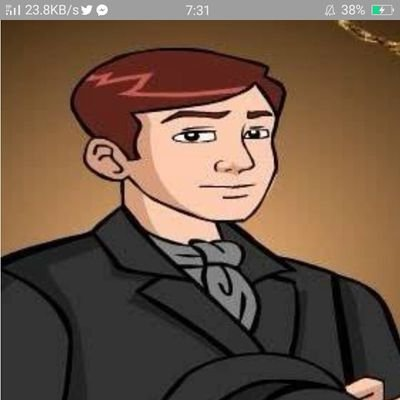
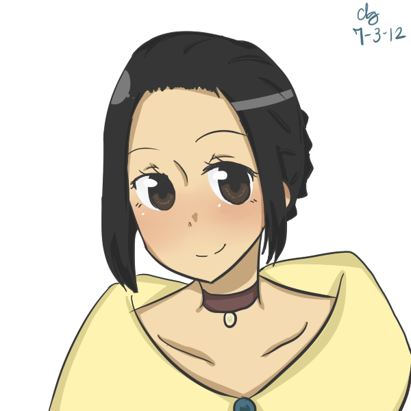
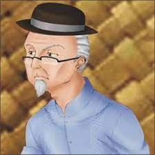

|  | CHRISOSTOMO IBARRA | He is an idealistic young man in San Diego. He seeks to improve the country and was influenced by his European education. He believed in the power of education to enact reforms. |
|  | MARIA CLARA | She is an idol and everyone has a crush on her. She is the romantic interest for Ibarra. Maria Clara grew up among everyone's smiles and loves. She is depicted as playful, in love, and elegant. |
|
PADRE DAMASO | He is a snobbish, ruthless, and very judgemental priest. He does not care about anyone's opinion and always mad and criticizes people, especially Chrisostomo. He has been cruel and awful throughout the story. |
|  | KAPITAN TIAGO | He is a rich native born Filipino and the "Father" of Maria Clara. He oppresses people in exchange for his influence and the riches they might get having such powerful associations. |
 |
DON RAFAEL | He is the father of Chrisostomo. Even though he's wealthy, he always gives back to his fellow countymen. He is also generous and virtuous. He was imprisoned and died before his freedom. His death motivated and influenced Chrisostomo in such a big way. |
 |
PADRE SALVI | He is more as a wistful priest. He said to be so strict in achieving his goals and duties. He wouldn't do anything to emberrass and dishonor his reputation. Salvi is sort of the town curate and a replacement for Padre Damaso. |